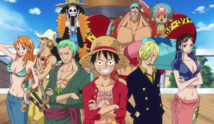
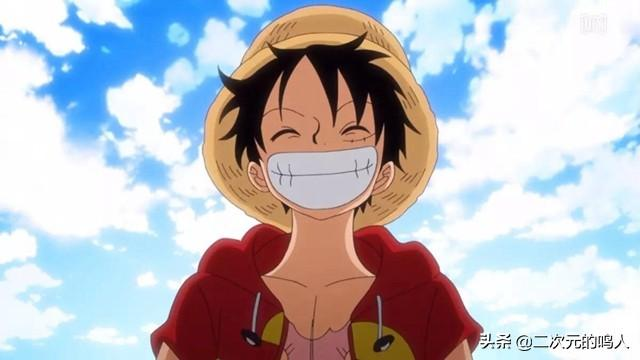
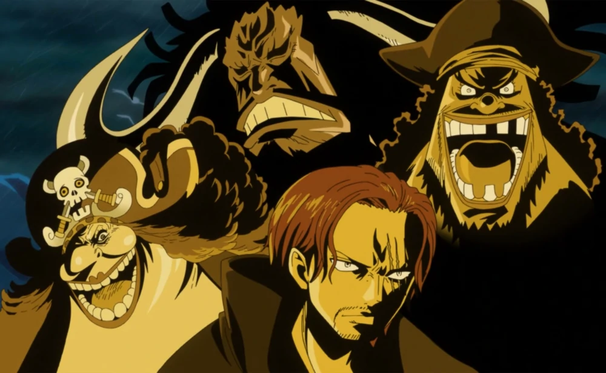
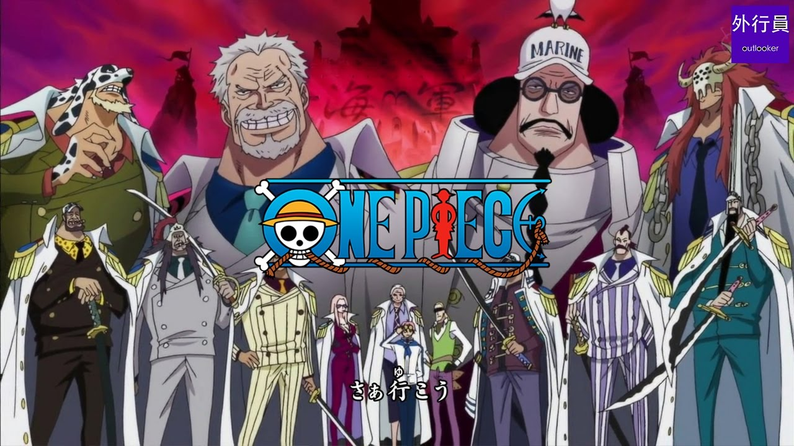

海賊王人物介紹:
草帽海賊團

通稱草帽一夥，海賊旗圖案是戴著草帽的骷髏頭航行至今由魯夫所集結的9名同伴共10人，因魯夫招募船員的偏好，船員們來自不同地方，個性能力都大相逕庭，甚至可以說是整個世界中最不一樣、最奇特的團體之一。
船長:蒙其·D·魯夫

本作的主角，草帽海賊團船長兼草帽大船團首領，外號「草帽小子」
四皇

四皇為偉大航路後海域新世界如皇帝般君臨世界的海賊。有時會因看中某個東西而將那個東西的出產地或製造者納入旗下；形成偉大航路中的三大勢力之一。
海軍

海軍是世界政府的直屬組織，以絕對正義為名義在全世界海洋執行維持治安的工作，是世界範圍內最大規模的軍隊組織，擁有許多大型戰艦，平時會在各海域巡邏，遇到海賊便加以圍捕。尤其作為中樞的海軍本部是偉大的航路（Grand Line）的「三大勢力」之一，和王下七武海、四皇齊名。
影片介紹